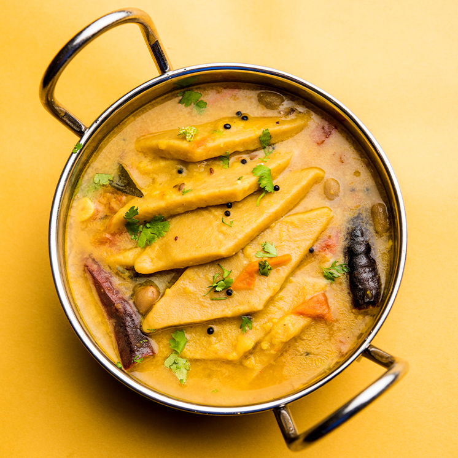

Dal Dhokali Recipe
Dal Dhokali is a comforting and hearty dish from the Indian state of Gujarat. It's a one-pot meal consisting of lentils (dal) cooked with wheat flour dumplings (dhokli) in a flavorful spiced broth. Follow the recipe below to make your own delicious Dal Dhokali!
Ingredients:
- 1 cup toor dal (split pigeon peas)
- 1 cup wheat flour
- 1 onion, finely chopped
- 2 tomatoes, finely chopped
- 2 green chilies, chopped
- 1 teaspoon ginger-garlic paste
- 1 teaspoon turmeric powder
- 1 teaspoon red chili powder
- 1 teaspoon coriander powder
- 1/2 teaspoon cumin seeds
- 1/2 teaspoon mustard seeds
- 1/4 teaspoon asafoetida (hing)
- 2-3 tablespoons oil or ghee
- Salt to taste
- Fresh coriander leaves for garnish
- Lemon wedges for serving (optional)
|
 |